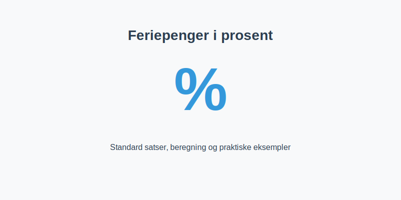

Feriepenger i prosent er satsen som benyttes for å beregne feriepenger i henhold til Ferieloven. Å forstå de ulike prosentsatsene, unntakene og praktiske beregningseksempler sikrer korrekt håndtering av feriepengeplikten.

Hvorfor bruke prosent for feriepenger?
Bruk av prosent som beregningsmetode for feriepenger gjør det:
- Enkelt å standardisere på tvers av ansatte og lønnsarter
- Rettferdig ved at satsen alltid er proporsjonal med opptjent inntekt
- Lovpålagt gjennom Ferielovens bestemmelser om feriepengesats
Ved å ha faste prosentsatser unngår bedriften manuelt kompliserte omregninger ved lønnsvariasjoner.
Standard feriepengesatser
| Gruppe | Feriepengesats |
|---|---|
| Ansatte under 60 år | 10,2% |
| Ansatte over 60 år | 12,5% |
| Særskilte tariffavtaler | Varierer |
Se også artikkelen Hva er Feriepenger? for helhetlig gjennomgang av feriepengeberegning og regnskapsføring.
Beregning av feriepenger i prosent
For å beregne feriepenger multipliseres feriepengegivende inntekt med gjeldende prosentsats.
- Identifiser feriepengegivende inntekt (lønn, overtid, tillegg, mv.)
- Velg korrekt feriepengesats basert på ansattkategori
- Utfør beregning: Feriepenger = Inntekt × Prosentsats
Feriepenger = 505 000 kr × 10,2% = 51 510 kr
Praktiske eksempler
| Eksempel | Inntekt (kr) | Sats | Feriepenger (kr) |
|---|---|---|---|
| Fastlønn + tillegg | 550 000 | 10,2% | 56 100 |
| Ansatt over 60 år (samme inntekt) | 550 000 | 12,5% | 68 750 |
Unntak og spesielle tilfeller
Noen situasjoner krever avvikende prosentsatser eller tilpasninger:
- Tariffavtaler kan gi høyere satser enn standard
- Langvarige ansatte får ekstra ferieuke etter ansiennitet
- Deltidsansatte bruker samme prosentsats, men lavere grunnlag
For detaljert diskusjon om grunnlaget for feriepenger, se Feriepengegrunnlag.
Relevans for regnskap og bokføring
Å kjenne prosentsatsene er avgjørende ved:
- Løpende avsetning av feriepenger hver måned
- Periodisering i regnskapet (konto 2940 / 5180)
- Årlig avstemming av feriepengegjeld og utbetalinger
Se vår guide Hva er Feriepenger? for utfyllende regnskapsinstruks.
Oppsummering
Feriepenger i prosent gir en enkel og lovpålagt metode for å sikre korrekt kompensasjon til ansatte. Ved å følge standard satser, kjenne unntak og bruke klare beregningseksempler, oppnås både nøyaktighet og etterlevelse av ferielovens regler.
For flere verktøy og illustrasjoner knyttet til feriepenger og lønnsregnskap, se relaterte artikler om arbeidsgiveravgift og A-ordningen.